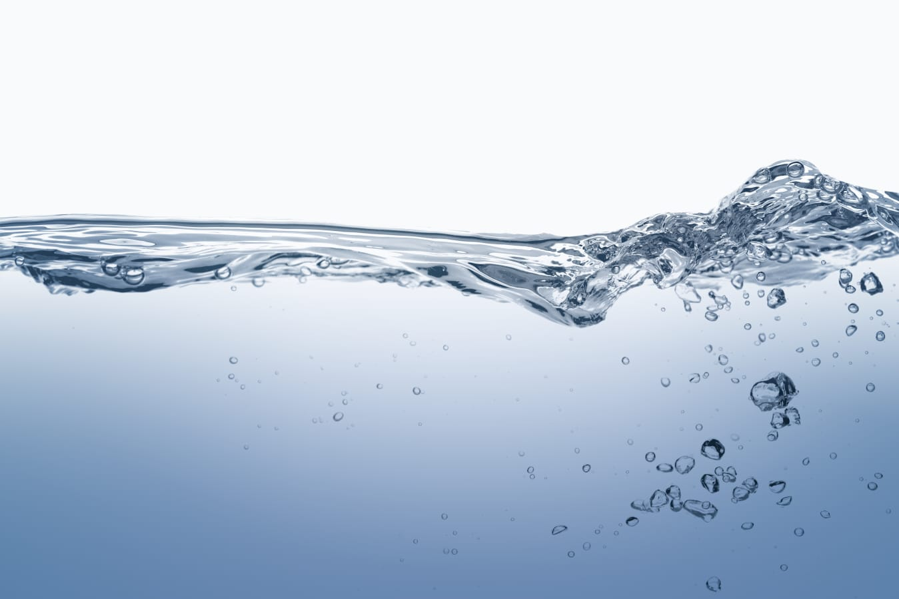
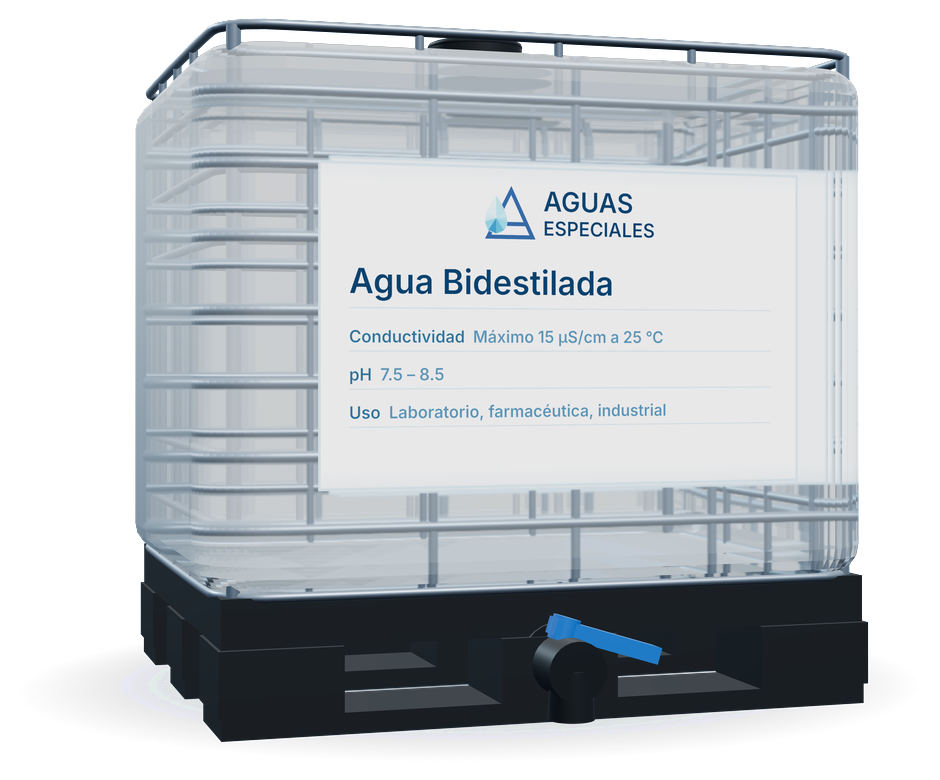

Agua con propósito
Diseñamos soluciones líquidas con especificaciones químicas y microbiológicas ajustadas a tu proceso.
Agua de grado científico e industrial · Estado de México

Producimos de acuerdo con parámetros técnicos, estándares de referencia o especificaciones particulares del cliente.
En un mundo donde la pureza del agua define la calidad de los procesos, AGUAS ESPECIALES nace con una misión clara: brindar soluciones hídricas diseñadas de acuerdo con parámetros técnicos, estándares de referencia o especificaciones particulares del cliente.
Nuestra historia comienza con una convicción: el agua no es solo un líquido, es un vehículo de limpieza, análisis y transformación. Sabíamos que no bastaba con ofrecer agua destilada o tratada como un simple insumo. Queríamos ir más allá y crear soluciones específicas para cada necesidad, de acuerdo con parámetros técnicos, estándares de referencia o especificaciones particulares del cliente.

Diseñamos soluciones líquidas con especificaciones químicas y microbiológicas ajustadas a tu proceso.
Elaboramos cada producto bajo condiciones controladas de higiene, calidad y seguridad, de acuerdo con parámetros técnicos, estándares de referencia o especificaciones particulares del cliente.
Realizamos análisis químicos, microbiológicos y fisicoquímicos, además de proveer soluciones y kits rápidos de análisis, para que nuestros clientes puedan diagnosticar y atender sus necesidades con nosotros de inicio a fin.
Desde agua desmineralizada hasta agua de alta pureza, desarrollamos soluciones de acuerdo con parámetros técnicos, estándares de referencia o especificaciones particulares del cliente, siempre con trazabilidad y respaldo técnico. Atendemos a la industria farmacéutica, cosmética, de alimentos y a laboratorios de análisis, entre otros.
Dinos qué agua necesitas y en qué volumen. Te respondemos con la especificación y el precio.
Xochicalco 10, Col. Cerro Grande, Atizapán de Zaragoza, Estado de México, C.P. 52920
También al 55 8790 8943